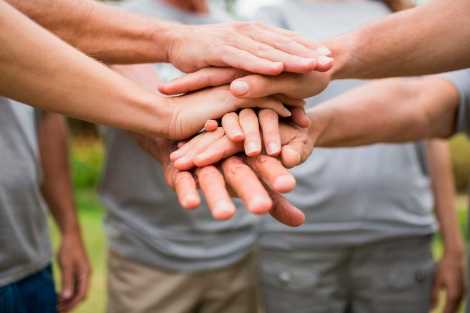
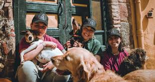

Emergencia en Beccar: ¡Dales un Plato Lleno a los Bichos de la Calle!
Recuperamos a un grupo grande de perros y gatos de Beccar, San Isidro, que estaban sobreviviendo como podían en la calle. Muchos llegaron deshidratados y con un grado importante de desnutrición. Si bien ya están a salvo con nosotros, la cantidad de bocas que alimentar ahora es gigante. Cada rescate es un éxito, pero también un desafío enorme. Por eso, te pedimos una mano urgente: necesitamos comida balanceada (seca o húmeda) para perros y gatos. Con un kilo que puedas acercar o donar, estás asegurando que estos valientes guerreros de la calle tengan la energía para recuperarse y empezar su nueva vida.
- Ubicación: Beccar, San Isidro.
- Impacto: 6 y 8 gatos y perros fueron rescatados.

¡Salvamos la Navidad! Rescate de Criadero Ilegal en Hudson, Zona
La semana pasada fue movida y de mucha garra. Gracias al laburo en equipo, logramos entrar y desmantelar un criadero clandestino de perros y gatos en Hudson, Zona Sur. Los bichos estaban en condiciones deplorables, hacinados y sin la atención veterinaria que se merecían. Sacamos a [Número Aproximado] de animalitos de ese infierno. Ahora están bajo nuestro cuidado, recibiendo amor, comida y la atención médica urgente. ¡Necesitamos tu ayuda para bancar su rehabilitación y darles el hogar que soñamos para ellos!.
- Ubicación: Hudson, Zona Sur.
- Impacto: 6 perros fueron rescatados de un criadero ilegal.

Alarma en La Matanza: Rescate de Perros y Gatos de una Obra Abandonada en Ramos Mejía
Activamos el protocolo de emergencia en Ramos Mejía luego de un aviso sobre la presencia de animales en una obra en construcción abandonada. El lugar era un foco de infección y un peligro constante de derrumbe. Nuestro equipo se movilizó de inmediato a La Matanza y, tras una jornada intensa, logramos sacar a varios perros y gatos que se refugiaban entre escombros. Los bichos presentaban desnutrición y sarna, producto de vivir a la intemperie. Ahora están bajo resguardo, con tratamiento veterinario y mucha comida. Necesitamos manos para darles tránsito y bancar los gastos. ¡Cada ayuda es clave para estos sobrevivientes del cemento!
- Ubicación: Ramos Mejia, La Matanza.
- Impacto: 11 animales rescatados.

Misión Cumplida en Vte. López: Rescatamos a 18 Gatos de una Casa Abandonada
El fin de semana pasado fue de máxima urgencia en Vicente López. Recibimos el aviso de vecinos preocupados por una casa abandonada que se había convertido en el hogar de una colonia grande de gatos, entre jóvenes y adultos. El lugar era un peligro para ellos y para la zona. Gracias a la rápida intervención de nuestro equipo, pudimos rescatar a [Número Aproximado] michis que estaban desnutridos y con problemas respiratorios. Ahora están a salvo, en cuarentena sanitaria, y pronto empezarán su proceso de socialización. Necesitamos mucho apoyo para bancar los tratamientos y la castración de todos. ¡Ayudanos a darles el futuro que se merecen!
- Ubicación: Olivos, Vicente López.
- Impacto: 18 gatos rescatados de una casa abandonada.